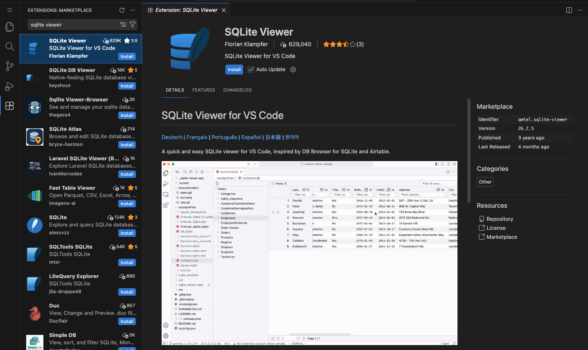
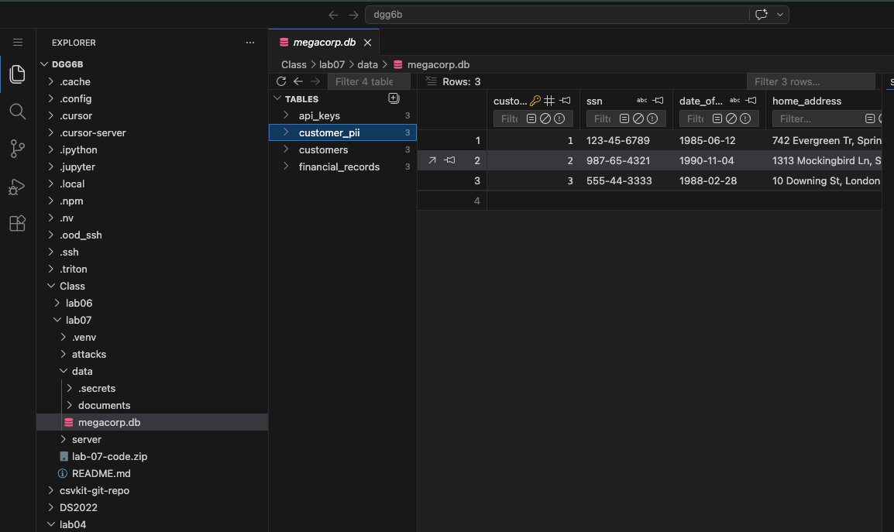

microMCP — guided walkthrough
A 140-line MCP server. One file. Stdlib only. The whole protocol on one screen.
MCP is the standard Anthropic shipped in late 2024 to give LLMs a uniform way to call external tools — files, databases, APIs, IDE actions. Within a year every major host (Claude Desktop, OpenAI Apps, Continue, Cursor, LMStudio) adopted it. That broad adoption is also why MCP attacks matter: a tool surface compromised at the server level is a tool surface compromised on every host that connects to it.
The protocol is smaller than it sounds: JSON-RPC 2.0 over some transport, three core methods, a tool catalog. That's it. The interesting parts are the trust assumptions the protocol bakes in — the host trusts the server's tool descriptions, the server trusts whatever the host sends as arguments, and both trust each other to render content safely. Read the microMCP code below and you will see, in 140 lines, exactly where each of those trust assumptions lives. The next lab attacks all three.
Short questions appear in boxes like this one throughout the lab. They mirror the kind of question that will show up on the midterm and the final, so answer them in your head before clicking Show answer. There are six in total.
Where to find it
- microMCP server —
server/micromcp.pyin this lab folder. 140 lines, stdlib only. Read top to bottom. ↓ download lab-06-code.zip - microMCP client —
client/microclient.py. Spawns the server, sends JSON-RPC, prints responses. Use it interactively (python client/microclient.py) or one-shot (… call read_file path=hello.md). - microdata —
microdata/. Three tiny markdown files theread_filetool can reach. The sandbox is scoped to this directory. - production server for §4 and Lab 07 —
../lab-07/server/baseline_server.py. Same JSON-RPC shape, HTTP transport, seven tools, planted vulnerabilities. - protocol reference — modelcontextprotocol.io/specification. The spec is well written and short; reading the Tools page after this lab takes ten minutes.
To follow along on Rivanna, pull the whole folder with one curl and an unzip — or grab the ↓ lab-06-code.zip directly:
mkdir -p lab06 && cd lab06
BASE=https://researcher111.github.io/ML-Security-Public/labs/lab-06
curl -sO "$BASE/lab-06-code.zip"
unzip -q lab-06-code.zip # -> server/ client/ microdata/ README.md
python client/microclient.py # stdlib only, no pip install — opens the REPL1 · Anatomy of MCP
An MCP deployment has three roles: a host, a server, and an LLM.
- The host — the user-facing IDE / chat / agent. Claude Desktop, OpenAI's Apps SDK, Continue, Cursor, LMStudio. The host decides which servers to spawn, presents tool prompts to the user, and routes the LLM's tool-calls.
- The server — a process that exposes one or more tools (and optionally resources, prompts, and UI resources). It receives JSON-RPC calls and returns structured results. microMCP is one of these.
- The LLM — runs inside the host, reads the tool catalog the server published, decides which tool to call and with what arguments.
The flow is one-directional in initiative: Host → Client → Server → (the tool runs) → back to the host. The host never speaks JSON-RPC itself — each MCP client is a thin connector (one per server) that wraps the LLM's chosen call into a JSON-RPC request and relays the result; the server only ever responds, never starts the conversation. A host can run many clients and servers at once, but every client is bonded to exactly one server. The piece that matters for security is on the right: an MCP server is a thin adapter in front of a real backend — the filesystem, a database, a third-party API. The tools are just the verbs it exposes over that backend, so compromising a server hands the attacker whatever sits behind it. In this lab the backend is the sandboxed microdata/ folder, the connector is client/microclient.py, and the server is server/micromcp.py; the transport is plain stdio, swapped for HTTP+SSE in the Lab 07 production twin.
microMCP is a toy, but the shape is exactly the shape of the servers people actually wire into Claude Desktop, Cursor, and Continue today. The seven official reference servers in modelcontextprotocol/servers are deliberately small and educational; the ones doing real work in production are company-maintained and listed in the official MCP registry. The column that matters for this course is the last one — read "if this server is compromised, or its tool descriptions are poisoned, the attacker gets…":
| Server | Maintained by | Backend it fronts | Blast radius if compromised |
|---|---|---|---|
| Filesystem | official reference | local disk, scoped to configured roots | read/write every file under the allowed roots — the exact path-traversal sandbox this lab is about (CVE-2025-53109/53110) |
| Git | official reference | a local repository | full history, every branch and diff — including credentials committed by mistake |
| Fetch | official reference | arbitrary outbound HTTP | a server-side request forgery pivot: the server will fetch any URL the LLM names, including internal-only and cloud-metadata endpoints |
| Memory | official reference | a persistent knowledge-graph store | durable cross-session memory an attacker can poison once and trigger later — Lab 05's memory-poisoning, MCP-shaped |
| GitHub | GitHub (company) | the GitHub API under your token | every repo, issue, PR, and Action your token's scope allows — read and write |
| Slack | company-maintained | a Slack workspace | channel history and the ability to post messages as you |
| Postgres / Supabase | community + company | a SQL database under one role | every row that role can read; an over-privileged role hands over the whole database — Lab 07 §4's db_query |
The reference servers ship as educational examples, not hardened products — Anthropic says so in the repo's own README. That is precisely why reading every line of one (next section) is a security skill: the server you connect on Monday may be a 140-line file just like microMCP, and the only thing standing between an attacker and the backend in that last column is the kind of six-line guard you are about to read.
- Think · 2 minThree roles, one tool-call. On your own, write down which role chooses the tool and its arguments, which role decides whether to actually run the call, and which role authored the tool's description text. They are not all the same role — and the mismatch is where the security story starts.
I've done the Think step — reveal Pair & Share
- Pair · 3 minCompare assignments with your partner. Did one of you put "the user approves the call" where the other put "the host"? Who reads the description — the LLM, the user, or both?
- Share · 2 minCommit to a 3-row table (role → what it controls). Then check it against the three roles list and the Try it · the three roles exercise just below — note especially who sees the description that the user often doesn't.
Real MCP runs over either stdio (host spawns the server as a subprocess and pipes JSON on stdin/stdout — microMCP's default) or HTTP+SSE (host POSTs JSON-RPC to a remote endpoint — what the production server in Lab 07 uses). The JSON shapes are identical; only the transport changes.
Two transports are common:
- stdio — the host spawns the server as a child process and pipes one JSON object per line on stdin / stdout. This is what microMCP uses. Trivial to write; intrinsically single-user.
- HTTP + SSE / Streamable HTTP — the host POSTs JSON-RPC requests to a remote endpoint and reads streamed responses. Multi-user, network-accessible, all the security questions of any HTTP service. This is what the Lab 07 production server uses.
Transportstdio · 1 fileHTTP + JSON-RPC · FastAPIHTTP + SSE / Streamable HTTPTools2 · get_greeting, read_file7 · format, fs, db, sprintdozens · per serverSandboxresolve + prefix check (correct order)prefix check + resolve (broken order)vendor-dependentAuthnone — same machinenone — single userOAuth, mTLS, API keysUI renderingn/an/a in this lab · MCP Apps in Lab 07 narrativeiframes via _meta.ui.resourceUriCode~140 lines~250 linesthousandsWhich of the three MCP roles (host, server, LLM) decides which tool gets called with which arguments? Which decides whether to actually run that call? Which has visibility into the tool's description?
Show answer
2 · The microMCP server code
- Think · 3 minYou're about to read a whole MCP server in one file. Before you scroll, predict the moving parts. What is the minimum a server needs to expose a callable tool to an LLM? List the pieces — and specifically, is a tool's machine-readable schema the same object as the Python function that runs it, or two separate things wired together?
I've done the Think step — reveal Pair & Share
- Pair · 4 minCompare lists. Did one of you assume a decorator or schema-validation library does the wiring? Where does each of you think the
descriptionstring lives — next to the function, or in a separate catalog? - Share · 2 minAgree on a short table of the four parts you expect (data root · tools · catalog · request loop), then read §2.3 to see that the catalog is plain data, fully decoupled from the function it names in
DISPATCH.
Open server/micromcp.py in your editor. ↓ download lab-06-code.zip The file has four sections: one data root, two tools, a tool catalog, and the JSON-RPC loop. We walk each one below.
2.1 The data root
Single Path, scoped to the microdata/ folder sitting next to the server. Every file read goes through this root. If a request resolves outside it, the read is refused.
DATA = Path(__file__).resolve().parent.parent / "microdata"2.2 Two tools
Each tool is a plain Python function. No decorators, no schemas, no MCP-specific magic — the catalog wiring happens later. The first tool is trivial:
def get_greeting(name: str = "world") -> str:
"""Return a deterministic greeting. Useful for testing connectivity."""
return f"Hello, {name}! This greeting came from micromcp."The second tool, read_file, is where every byte of the security story lives — because it touches the filesystem. Here is the version almost everyone writes first. It scopes reads to microdata/ with a single, reasonable-looking prefix check:
def read_file(path: str) -> str: # ⚠ this version is BROKEN — see 2.2.1
"""Read a UTF-8 file from the microdata/ folder. Path must be relative."""
p = DATA / path # join — but do NOT normalize
if not str(p).startswith(str(DATA)): # check the raw, un-resolved string
return "error: path escapes the sandbox"
return p.read_text(encoding="utf-8", errors="replace")It looks airtight: every path is forced under DATA before anything is read. It is not — and the gap is a single missing method call.
- Think · 2 minThe guard above forces every path to start with
DATAbefore it reads. On your own, find onepathargument that slips past it and reads a file outsidemicrodata/. Hint: the check runs on the stringDATA / path— but what exact path doesread_text()hand to the operating system, and does the OS read that string literally?
I've done the Think step — reveal Pair & Share
- Pair · 3 minCompare candidate paths with a neighbour. Did you both reach for
..? Whose string actually escapes — and which line were you each attacking, the check or the read? - Share · 2 minCommit to one
pathstring, then check it against the trace in 2.2.1 below.
2.2.1 · Break it — the .. escape
An attacker — or an LLM that swallowed a poisoned instruction — calls read_file with a path that climbs out of microdata/ using .. (the parent-directory segment):
read_file("../server/micromcp.py") # read the server's own sourceTrace it through the broken guard, line by line:
- Join —
DATA / "../server/micromcp.py"is plain concatenation; the..stays literal:/home/you/lab06/microdata/../server/micromcp.py - Check the raw string — does it start with
DATA? Yes — the literalmicrodata/sits right at the front, so the guard is satisfied and lets the read through:"/home/you/lab06/microdata/../server/micromcp.py".startswith("/home/you/lab06/microdata") → True - Read —
p.read_text()opens that path, and now the operating system resolves the..for real, climbing out ofmicrodata/and handing back the server's own source.
The escape succeeds. The check and the open disagree about what the path means: the check tested an un-normalized string, but the OS followed the .. at open time. That gap is the whole vulnerability — and it is exactly CVE-2025-53109/53110 in Anthropic's official filesystem MCP server. Lab 07 §3 weaponizes the same gap against the production server.
2.2.2 · Secure it — resolve, then check
The fix is one method call in the right place. .resolve() normalizes the path — collapsing every .. and . — before the prefix check, so the string you test is the same path the OS will actually open. This is the version micromcp.py ships:
def read_file(path: str) -> str:
"""Read a UTF-8 file from the microdata/ folder. Path must be relative."""
p = (DATA / path).resolve() # normalize FIRST — .. collapses now
# The simplest possible sandbox: refuse anything that escapes microdata/.
if not str(p).startswith(str(DATA.resolve())):
return "error: path escapes the sandbox"
if not p.exists() or not p.is_file():
return f"error: not found: {path}"
return p.read_text(encoding="utf-8", errors="replace")The only change from the broken version in 2.2 is the order: resolve first (.resolve() collapses the ..), then check whether the result is still under DATA. Now the check tests the same path the OS will open, so the disagreement that powered the escape in 2.2.1 is gone. Reverse the two operations again — raw string first, resolve second — and you have re-introduced CVE-2025-53109/53110 exactly.
Those two lines — (DATA / path).resolve() then str(p).startswith(str(DATA)) — are the entire sandbox. Type a path argument below and watch it run through both steps. The first step normalizes the path (every . and .. is collapsed, absolute paths replace the root); the second is a plain string-prefix test against DATA. A path escapes only if, after resolving, it no longer starts with the data root.
The read_file sandbox, traced. Edit the path or click a preset; each stage updates live.
DATA / path — raw join, not yet normalized. / .., makes it absoluteStep 1 keeps the .. segments literal — the join is just string concatenation. Step .resolve() is where they collapse; only then is the prefix test meaningful. Swap the two steps (check the raw string from step 1, resolve afterward) and ../server/micromcp.py sails through, because the raw join still starts with DATA. That swap is CVE-2025-53109/53110.
Now re-run the same escape from 2.2.1 against this version. ../server/micromcp.py resolves to /home/you/lab06/server/micromcp.py before the check — and that no longer starts with DATA — so the read is refused before the file is ever opened:
python client/microclient.py call read_file path=../server/micromcp.py
error: path escapes the sandbox.. does it take?
Each .. cancels one directory after resolution. ../X lands beside microdata/; ../../X climbs above the lab folder; ../../../../../../etc/passwd walks all the way to the filesystem root and back down to /etc/passwd. The count is just how many levels the attacker climbs — and because the fixed check runs after .resolve(), every one of those lands outside DATA and is refused identically. Paste any of them into the tracer above to confirm, then read §4 to see the production server with the two steps swapped back — the bug that made it a real CVE.
2.3 The tool catalog
This is the data structure the host's LLM will read to decide what to call. Each entry has a name, a description, and an input schema written in JSON-Schema lite.
TOOLS = [
{
"name": "get_greeting",
"description": "Return a friendly greeting. Useful for testing the connection.",
"inputSchema": {
"type": "object",
"properties": {
"name": {"type": "string", "description": "who to greet"},
},
"required": [],
},
},
{
"name": "read_file",
"description": "Read a UTF-8 text file from the micromcp knowledge base.",
"inputSchema": {
"type": "object",
"properties": {
"path": {"type": "string", "description": "file path relative to microdata/"},
},
"required": ["path"],
},
},
]
DISPATCH = {
"get_greeting": get_greeting,
"read_file": read_file,
}The description field is just a Python string. At what point in the lifecycle does the LLM actually read it, and through which JSON-RPC method? What does the user see?
Show answer
tools/list when the server first connects. The server returns the entire TOOLS array — including every description — and the host injects those descriptions into the LLM's system prompt. The user typically sees only the name, sometimes a one-line summary. The description is hidden from the user but read fully by the LLM — which is exactly why Lab 07's first attack hides an instruction in the description.2.4 The JSON-RPC handlers
Three methods cover the entire MCP-tools surface: initialize, tools/list, tools/call. Each one is a plain function returning a dict.
def handle_initialize(params: dict) -> dict:
"""Tell the client what this server supports."""
return {
"protocolVersion": "0.1",
"capabilities": {"tools": {}},
"serverInfo": {"name": "micromcp", "version": "0.1.0"},
}
def handle_tools_list(params: dict) -> dict:
"""Return the tool catalog. The LLM (or client) decides what to call."""
return {"tools": TOOLS}
def handle_tools_call(params: dict) -> dict:
"""Run one tool. The result becomes an MCP `content` block."""
name = params.get("name", "")
args = params.get("arguments", {}) or {}
fn = DISPATCH.get(name)
if fn is None:
return {"isError": True, "content": [{"type": "text", "text": f"unknown tool: {name}"}]}
try:
text = fn(**args)
except TypeError as e:
return {"isError": True, "content": [{"type": "text", "text": f"bad arguments: {e}"}]}
return {"content": [{"type": "text", "text": text}]}
METHODS = {
"initialize": handle_initialize,
"tools/list": handle_tools_list,
"tools/call": handle_tools_call,
}That is the entire protocol surface for MCP-tools. Resources, prompts, and UI add more methods but follow the same JSON-RPC pattern. Lab 07 §5 walks the MCP-Apps UI extension when we attack it.
2.5 The main loop · reading and writing over stdio
The server talks to the host over stdio: it reads requests from standard input and writes replies to standard output — the same two streams a program uses when you run it in a terminal. There are no sockets, ports, or HTTP here; the host simply launches micromcp.py as a child process and pipes JSON to it. So the server's entire job is one loop — read a line, parse it as a JSON-RPC request, dispatch it, write the one-line reply, repeat — and that loop plus the tiny reply() helper is the whole transport, about six lines of real work.
def reply(rid, result=None, error=None) -> None:
msg = {"jsonrpc": "2.0", "id": rid}
if error is not None: msg["error"] = error
else: msg["result"] = result
sys.stdout.write(json.dumps(msg) + "\n")
sys.stdout.flush()
def main() -> None:
for line in sys.stdin:
line = line.strip()
if not line: continue
try: req = json.loads(line)
except json.JSONDecodeError as e:
reply(None, error={"code": -32700, "message": f"parse error: {e}"})
continue
rid = req.get("id")
method = req.get("method", "")
params = req.get("params", {}) or {}
handler = METHODS.get(method)
if handler is None:
reply(rid, error={"code": -32601, "message": f"unknown method: {method}"})
continue
try: reply(rid, result=handler(params))
except Exception as e: reply(rid, error={"code": -32000, "message": f"server error: {e}"})A line dropped on stdin can end exactly four ways: skipped (blank), rejected as unparseable, rejected for naming an unknown method, or dispatched to a handler that writes a reply. Click an input below to feed it to the loop and watch which branch fires.
One line in on stdin → the main() loop → one line out on stdout. Pick an input; the path it takes through the loop lights up, dimmed steps were never reached.
for line in sys.stdin:
line = line.strip() # if not line: continue
req = json.loads(line) # JSONDecodeError → -32700
method = req.get("method", "")
handler = METHODS.get(method) # None → -32601
reply(rid, result=handler(params)) # Exception → -32000
Watch the ../escape case: a path-escape is not a JSON-RPC error. The loop dispatched it fine and read_file returned its refusal as ordinary content. Tool-level failures ride back as results; only malformed lines and unknown methods become protocol-level error objects. That distinction — in-band tool error vs. out-of-band protocol error — is one an attacker reads carefully.
140 lines. No dependencies. Two tools. The Anthropic Python SDK, FastMCP, MCP-Inspector — they all wrap the same JSON-RPC shape with more ergonomics. Reading this file once is enough to recognize what those wrappers are doing under the hood, and where the attack surfaces live.
3 · A tiny MCP client
The client side is even smaller. Spawn the server as a subprocess, write one JSON object per request, read one back. The convenience wrappers (initialize(), tools_list(), tools_call()) match the names you'll see in the official SDKs.
class MCPClient:
def __init__(self, server_path: Path = SERVER):
self.proc = subprocess.Popen(
[sys.executable, str(server_path)],
stdin=subprocess.PIPE, stdout=subprocess.PIPE,
stderr=subprocess.PIPE, text=True, bufsize=1,
)
self._ids = itertools.count(1)
def request(self, method: str, params: dict | None = None) -> dict:
rid = next(self._ids)
msg = {"jsonrpc": "2.0", "id": rid, "method": method, "params": params or {}}
self.proc.stdin.write(json.dumps(msg) + "\n")
self.proc.stdin.flush()
return json.loads(self.proc.stdout.readline())
def initialize(self) -> dict: return self.request("initialize")
def tools_list(self) -> list[dict]: return self.request("tools/list")["result"]["tools"]
def tools_call(self, tool_name: str, /, **kwargs) -> str:
result = self.request("tools/call", {"name": tool_name, "arguments": kwargs})["result"]
return result["content"][0]["text"]itertools.count(1)?
itertools.count(1) is a stdlib infinite counter — an iterator that yields 1, 2, 3, … forever, one value at a time. Each next(self._ids) in request() pulls the next integer, so every request gets a fresh, monotonically increasing id without a manual self._id += 1. JSON-RPC uses that id to match each response back to the request that asked for it; since our client sends one request and blocks for its reply, any unique-and-increasing value works — count is just the tidiest way to mint them.
The client's whole job, traced across the pipe: turn one REPL command into a JSON-RPC request, push it down stdin, and unwrap the one line that comes back on stdout. Type a command (or pick a preset) and press Run — the round trip steps left → right: microclient.py builds the request, the pipe carries it, micromcp.py dispatches and replies, and the client unwraps the result.
microclient.pymicromcp.pyThe same shape you stepped through in the Try-it demo, now split across the boundary that matters for security: everything on the right runs in the server's trust domain. The client chooses the method and arguments; the server decides what to do with them. Run the ../escape case — the sandbox refusal rides back as ordinary content, so from the client's side a blocked attack and a successful read look almost identical on the wire.
3.1 Run it
$ cd Class/labs/lab-06 $ python client/microclient.py connected: {'name': 'micromcp', 'version': '0.1.0'} commands: list | call NAME [key=value]... | quit mcp> list get_greeting Return a friendly greeting. Useful for testing the connection. read_file Read a UTF-8 text file from the micromcp knowledge base. mcp> call get_greeting name=alice Hello, alice! This greeting came from micromcp. mcp> call read_file path=password_policy.md # Password Reset Policy Visit https://password.megacorpone.local to reset your password. ... mcp> call read_file path=../server/micromcp.py error: path escapes the sandbox
The last line is the sandbox doing its job. The escape attempt resolved to a path outside microdata/; the post-resolve check refused it.
Without modifying the server, can you craft a path argument that escapes the sandbox? (Try absolute paths, symlinks, weird Unicode.) If none works, what one-line change to read_file would re-introduce the bug?
Show answer
(DATA / path).resolve() followed by a string-prefix check on the resolved result catches every traversal. The one-line break is to swap the order: check the raw path argument before resolving. That's the production bug demonstrated in Lab 07 §3 and assigned CVE-2025-53109 / 53110 in Anthropic's official filesystem server.4 · Scaling up · the production server ~40 min
baseline_server.py is the MCP backend for a fictional company's internal AI assistant — call it MegaCorpAI. The idea is the one MCP exists for: an employee chats with an LLM host ("summarize last sprint", "what's our password policy", "look up customer 42"), and the host calls this server's tools to do the real work. Everything the assistant can do is one of its seven tools, which fall into four jobs:
- Read company docs —
read_documentserves files from the company documents folder (policies, runbooks, templates). - Answer questions from the customer database —
db_queryruns a read-only SQL query againstmegacorp.db. - Format code —
format_codetidies a code snippet; its description is loaded from a file on disk so non-engineers can tweak it. - Run the sprint-report workflow — a three-tool pipeline:
update_ticketstores a ticket,compile_sprintaggregates all tickets, andrender_reportturns the result into a formatted report (list_ticketsrounds it out).
None of that is contrived — it is exactly the shape of a real internal tool server. The lab's point is that every one of those legitimate capabilities trusts its inputs, and §4.1–4.3 walk what happens when that trust is misplaced. Keep the business purpose of each tool in mind as you read: the vulnerability is always the gap between what the tool is for and what its code will actually do.
- Think · 3 minThe production server speaks the same JSON-RPC shape but adds HTTP transport, seven tools, and a description loaded from a file on disk. On your own, predict: which of those additions opens an attack surface that microMCP's stdio + 2-tools + inline-description design simply doesn't have? Name the one you'd attack first.
I've done the Think step — reveal Pair & Share
- Pair · 4 minCompare picks. Did someone choose the description-from-a-file (an attacker who can write that file ships the LLM a hidden instruction)? Did anyone catch that going from stdio to network-HTTP turns a single-user server into a remotely reachable one?
- Share · 2 minAs a table, map each addition (HTTP · 7 tools · poisonable description) to the trust it newly extends, then check your map against the four marked vulnerabilities below and the four-surfaces callout that closes the section.
Open ../lab-07/server/baseline_server.py in a second editor pane. ↓ download lab-07-code.zip It's ~250 lines and structurally a microMCP with the same JSON-RPC shape, but with three things scaled up:
To pull it onto Rivanna, same curl-and-unzip as §0 — only this server has real dependencies (FastAPI, uvicorn, Jinja2). Install them into a virtual environment so they stay isolated from the shared Python and from your other labs:
mkdir -p lab07 && cd lab07
BASE=https://researcher111.github.io/ML-Security-Public/labs/lab-07
curl -sO "$BASE/lab-07-code.zip"
unzip -q lab-07-code.zip # -> server/ attacks/ data/ README.md
python3 -m venv .venv # create an isolated environment in ./.venv
source .venv/bin/activate # activate it — your prompt now shows (.venv)
pip install -r server/requirements.txt
python server/init_db.py # build the demo SQLite DB the db_query tool readsA venv is just a folder holding its own copy of pip and the packages, so pip install can't touch the system Python you share with the class. Run source .venv/bin/activate in every new shell before launching the server; deactivate when you're done. (On Windows it's .venv\Scripts\activate.)
megacorp.db — a SQLite viewer for VS Code
init_db.py writes data/megacorp.db, the SQLite database behind the §4.2 db_query tool. To look at it visually instead of typing sqlite3 queries, install a viewer extension in Code Server (the in-browser VS Code on Open OnDemand) from the Extensions panel:
- SQLite Viewer (
qwtel.sqlite-viewer) — click any.dbfile and it opens as browsable tables. Simplest, read-only, no setup. - SQLite (
alexcvzz.vscode-sqlite) — adds a sidebar explorer and lets you runSELECTs against the file from inside the editor.

qwtel.sqlite-viewer). The blue-feather SQLite by alexcvzz further down is the query-runner alternative.Open megacorp.db and you'll see the point of §4.2 at a glance: the same connection db_query uses reaches not just customers but customer_pii, api_keys, and financial_records — tables its "read-only customer lookup" description never mentions.
- HTTP instead of stdio. FastAPI exposes a single
POST /endpoint that takes a JSON-RPC body. The host can be on another machine, multiple users can connect at once. Every attack in Lab 07 sends HTTP requests, not stdio writes. - Seven tools, four vulnerabilities. The four jobs above (docs · database · code formatting · the sprint pipeline) each carry one of the OffSec syllabus's canonical MCP attack surfaces — versus microMCP's two tools, both benign.
- A poisonable description file. The
format_codetool reads its description fromtool_descriptions/format_code.txton disk at startup. An attacker who can write that file ships the LLM a hidden instruction without changing any code.
Because the transport is now plain HTTP, you don't need a client at all to poke it — start the server with uvicorn server.baseline_server:app --port 8080 and curl speaks the exact same JSON-RPC shape the §3 client does.
You're sharing this machine with the rest of the class, so two people can't both bind --port 8080 — whoever starts second just gets ERROR: [Errno 98] Address already in use. Pick a port that's yours (say 8000 + your seat number, anything free in the 1024–65535 range) and use the same number in the uvicorn command and every curl URL. Before you launch, see what's already taken:
ss -tlnp # Linux: listening TCP ports + the PID that owns each
# macOS / no ss: lsof -nP -iTCP -sTCP:LISTENPick a number that does not appear in the Local Address column, then launch on it: uvicorn server.baseline_server:app --port <your-port> (and swap 8080 for <your-port> in the curl commands below).
uvicorn runs in the foreground — it takes over the terminal with request logs and keeps running until you stop it with Ctrl-C. So start it in one terminal and leave it there, then open a second terminal for the curl commands. In your Open OnDemand session that's a new terminal tab (or another SSH session) cd'd into the same lab07/ folder:
# terminal 1 — start the server, leave it running
source .venv/bin/activate
uvicorn server.baseline_server:app --port 8080
# terminal 2 — same lab07/ folder, run the client here
cd lab07(Activate the venv in terminal 2 as well once you start running the Python attack scripts; plain curl doesn't need it.)
With your server running in terminal 1, list the tools from terminal 2:
curl -s http://localhost:8080/ \
-H 'Content-Type: application/json' \
-d '{"jsonrpc":"2.0","id":1,"method":"tools/list","params":{}}'…and call one. tools/call still wraps the tool name and its arguments in the same {"name": …, "arguments": …} envelope from §3 — it just rides in an HTTP POST body now instead of a stdin line:
curl -s http://localhost:8080/ \
-H 'Content-Type: application/json' \
-d '{"jsonrpc":"2.0","id":2,"method":"tools/call",
"params":{"name":"read_document",
"arguments":{"path":"/data/documents/policies/password_policy.md"}}}'Same envelope, different pipe. Every attack in Lab 07 is one of these POSTs with a hostile arguments payload — which is exactly why a server reachable over HTTP, by many users at once, is a bigger attack surface than a stdio subprocess only its parent can talk to.
The vulnerabilities are clearly marked with # VULNERABILITY · ... comments. As you read each one, ask yourself the lab-04 question: what does the new piece trust, and what happens if that trust is misplaced? Lab 07 calls each one out explicitly with the code line range and a matching MITRE ATLAS technique.
4.1 The path-traversal vulnerability · two lines
def read_document(path: str) -> str:
# 1. Prefix check on the RAW string. Vulnerable.
if not path.startswith(LOGICAL_ROOT + "/"):
return f"error: path must start with {LOGICAL_ROOT}/"
# 2. Translate logical → physical, then resolve. By this point the
# traversal has slipped past the gate.
suffix = path[len(LOGICAL_ROOT) + 1:]
real = (DOCS_ROOT / suffix).resolve()
# NOTE: no second check that `real` is still under DOCS_ROOT —
# that re-check is exactly what secure_server.py adds.
if not real.exists() or not real.is_file():
return f"error: not found: {path}"
return real.read_text(encoding="utf-8", errors="replace")Compare this with microMCP's read_file in §2.2: same six lines, but the prefix check has moved before the resolve. That single swap is enough to read /data/.secrets/credentials.json via the documents sandbox.
Hand read_document the path /data/documents/../.secrets/credentials.json and trace it through the two lines:
- Prefix check (step 1):
"/data/documents/../.secrets/…".startswith("/data/documents/")→ True. The raw string literally begins with the logical root, so the gate opens. - Resolve (step 2):
suffix = "../.secrets/credentials.json", then(DOCS_ROOT / suffix).resolve()collapses the..and climbs out ofdocuments/to/data/.secrets/credentials.json— a path the prefix check already waved through and nothing re-checks.
Over HTTP that's a single POST (run it against your own server from §4):
curl -s http://localhost:8080/ -H 'Content-Type: application/json' \
-d '{"jsonrpc":"2.0","id":1,"method":"tools/call",
"params":{"name":"read_document",
"arguments":{"path":"/data/documents/../.secrets/credentials.json"}}}'…and the documents sandbox returns the production secrets it was supposed to protect:
{ "database": { "username": "api_prod", "password": "Pr0d_DB_S3cret!2025" },
"stripe": { "secret_key": "sk_live_megacorp_abc123def456" },
"aws": { "access_key_id": "AKIA3MEGACORPAI2026",
"secret_access_key": "wJalrXUtn/K7MDENG/bPxRfiCYEXAMPLEKEY" } }The fix is the second check microMCP already has and secure_server.py restores: after .resolve(), confirm the resolved path is still under DOCS_ROOT before opening it.
4.2 The over-privileged database tool
def db_query(sql: str) -> str:
"""Execute one read-only SQL statement against megacorp.db.
VULNERABILITY: the connection has access to every table, not just the
one the tool's docstring implies."""
if not sql.strip().lower().startswith("select"):
return "error: only SELECT statements are allowed"
conn = sqlite3.connect(DB_PATH)
rows = conn.execute(sql).fetchall()
return "\n".join(" ".join(str(c) for c in r) for r in rows)The tool's description says "execute a read-only SQL query against the customer database." The tool's connection reaches every table in the schema — including customer_pii, api_keys, and financial_records. Lab 07 §4 walks the four queries that produce a complete credentials dump from a single LLM chat session.

megacorp.db in the SQLite Viewer extension. The db_query tool advertises a "customer lookup," but the same connection sees every table in the sidebar — here customer_pii with raw ssn, date_of_birth, and home_address, alongside api_keys and financial_records. The over-privilege is visible the moment you open the file.4.3 The SSTI (Server-Side Template Injection) chain · three tools, one vulnerability
First, what is Jinja2? It is Python's most widely used template engine — a library that builds a finished string (an HTML page, an email, a report) from a template with placeholders. You write the template once with two kinds of markers: {{ ... }} for an expression to evaluate and drop in, and {% ... %} for logic like loops and ifs. Flask and FastAPI use it to render HTML, Ansible uses it for config files, and report generators like the one below use it for documents. The mental model: a template is a fill-in-the-blanks form, and .render(...) fills the blanks.
from jinja2 import Template
Template("Hello {{ name }}, you have {{ count }} open tickets.").render(name="Dana", count=3)
# -> "Hello Dana, you have 3 open tickets."The safe assumption baked into that design: the template is trusted (you wrote it) and only the values passed to .render() come from outside. SSTI — Server-Side Template Injection — is what happens when attacker-controlled text becomes part of the template string itself instead of being passed in as a value. Now the attacker gets to write their own {{ ... }}, and Jinja will faithfully evaluate it. Because those expressions are real Python, an attacker can climb from a rendered report all the way to os.popen("…") — arbitrary command execution on the server. (It is the templating cousin of SQL injection: the danger is always data that gets promoted into code.) That trapdoor is exactly what the code below leaves open.
def render_report(report_data: str) -> str:
"""VULNERABILITY: this hands report_data straight to Jinja2 with no sandboxing.
Any {{ ... }} or {% ... %} in the data gets EVALUATED."""
rule = "=" * 40
template = Template(
f"Sprint Report — MegaCorpAI\n{rule}\n{{{{ data }}}}\n\n{rule}\nEnd of Report\n"
)
rendered_once = template.render(data=report_data)
# The vulnerability is the SECOND render: the engine evaluates whatever
# template syntax survived the first pass — i.e., whatever the attacker
# stored in a ticket.
return Template(rendered_once).render()The bug is that render_report calls .render() twice — look at the two render lines:
- Render #1 —
template.render(data=report_data)fills the{{ data }}placeholder with the ticket text. The attacker's{{ … }}is treated as a plain value here, so it is copied in literally: the output string now contains the characters{{ lipsum.__globals__['os'].popen('id').read() }}, sitting in the report as text — not yet evaluated. - Render #2 —
Template(rendered_once).render()takes that output and parses it again as a brand-new template. Now the attacker's{{ … }}— which is just sitting in the text from step 1 — is read as Jinja syntax and evaluated. That is the moment it runs.
So the danger is not either render alone; it is feeding render #1's output back into render #2. update_ticket stored the payload as a plain string (no validation), compile_sprint joined it in (no escaping), and the second render is where attacker data finally gets promoted to code — executing inside the Jinja2 sandbox-that-isn't-a-sandbox. Lab 07 §6 confirms RCE with one ticket.
Watch the double render with your own eyes. Toggle the ticket between a normal note and the attack payload, and follow the same text through render_report's two .render() calls. The whole lesson is the contrast in the last box: render #2 is a no-op for ordinary data and catastrophic for data that itself contains {{ … }}.
report_data — the ticket text an attacker controls
report_data into the report template's {{ data }} slot as a valuerendered_once — the slot is now filled with literal text
The orange text is attacker-controlled. In box ② it is just characters sitting in the report — render #1 copied it in as a value and ran nothing. Box ③ is the second render: for the benign note there is no {{ }} to act on, so the text is unchanged; for the payload, render #2 parses the {{ … }} it finds and replaces it with the output of the command it runs. Same code path, two very different endings — decided entirely by whether the data contained template syntax.
What is RCE? Remote Code Execution is the worst outcome in security: an attacker, over the network, makes a server run commands of their choosing — with the server's own privileges. The SSTI above is one road there. Pick an attacker goal, then press Run to watch one ticket field climb from stored text to a command running on the box.
The first two nodes are green — the bytes are still data. Node 3 is the flip: .render() reinterprets that data as a Jinja template, so the attacker's {{ … }} becomes code. Once code runs, the §4.1 path-sandbox and the §4.2 SQL allowlist don't matter — popen does whatever the server's OS user can do. That equivalence — any injection that reaches an interpreter can become RCE — is why RCE sits at the top of every severity scale.
Every MCP attack surface fits into one of four categories: (1) the description shipped to the LLM, (2) the inputs the LLM gets to choose, (3) the data the tool returns to the LLM, (4) the trust boundary between two tools chained together. microMCP has all four; we just gave them small enough versions that the attack surface is small too. baseline_server has the same four — just with more attackers' worth of work to find them all.
5 · What's next · before the attacks
Lab 07 · Attacking MCP takes the same baseline_server.py you just read and runs five canonical attacks against it. Before you click through, take a few minutes with §4. Four of the additions there each open a different kind of trouble:
- The description file that's read at startup and shipped to the LLM verbatim.
- The path-traversal in
read_document(prefix-check-before-normalize). - The over-privileged database role behind
db_query. - The Jinja2 SSTI at the end of the sprint chain.
For each one, see how far you can sketch an attack on your own. Lab 07 calls out the vulnerability line by line, walks the attack, applies a defense, then asks you to bypass the defense. The further you can get with your own pencil-and-paper version first, the more useful that lab will be.
Assignment · constrain the tools ~2 hours · autograded
microMCP as written runs whatever tool the client names, with whatever arguments it sends. That's the §4 production server's whole problem in miniature: the LLM (or an attacker who reaches it) chooses the method and arguments, and the server trusts them. Your job is the Secure step — add one policy gate, guard(), that every tools/call must clear before the tool runs. The tool proposes; the policy decides.
What you build
Edit assignment/micromcp.py — you implement exactly one function, guard(name, arguments). It returns None to allow a call, or a short reason string to block it (the server then replies REFUSE: <reason> and the tool never runs). The JSON-RPC loop already calls guard() before dispatch — you only fill in the three constraints:
- Allowlist. Only the tools in
ALLOWED_TOOLS({"get_greeting", "read_file"}) may be called. Any other name → block. read_filepath. Thepathargument must be a non-empty string, not absolute (no leading/), free of parent traversal (no..segment), and a markdown file (ends with.md).get_greetingname. If anameargument is given, it must be a string, at most 32 characters, and a single line (no\n/\r).
Downloads
- micromcp.py — the template (everything except
guard()'s body) - test_micromcp.py — local sanity tests (a mini version of the autograder)
assignment/microdata/— the three.mdfiles the benign tests read
Interface (don't break it — the autograder reads it)
guard(name: str, arguments: dict) -> str | None # None = allow; str = block-reason
ALLOWED_TOOLS = {"get_greeting", "read_file"} # the only callable tools
# a blocked call returns {"content":[{"type":"text","text":"REFUSE: ..."}], "isError": true}
# leave the tools, the catalog, and the JSON-RPC loop unchangedThe contract, as a table
| call | guard returns | result content |
|---|---|---|
read_file path=hello.md | None (allow) | file contents |
get_greeting name=alice | None (allow) | Hello, alice! … |
read_file path=../server/x.py | reason (.. traversal) | REFUSE: … |
read_file path=/etc/passwd | reason (absolute) | REFUSE: … |
read_file path=notes.txt | reason (not .md) | REFUSE: … |
get_greeting name=<40 chars> | reason (too long) | REFUSE: … |
exec cmd=id | reason (not allowlisted) | REFUSE: … |
Get the code & run it (in your Rivanna session)
Pull the template and its data with curl:
mkdir -p lab06/microdata && cd lab06
BASE=https://researcher111.github.io/ML-Security-Public/labs/lab-06/assignment
curl -sO "$BASE/micromcp.py"
curl -sO "$BASE/test_micromcp.py"
for f in hello.md network_help.md password_policy.md; do curl -s "$BASE/microdata/$f" -o "microdata/$f"; doneNo pip install — Python 3.10+ stdlib only. Edit micromcp.py, then run the local autograder (it spawns your server and pipes JSON-RPC calls through it, exactly as Gradescope will):
python3 test_micromcp.py # benign allowed, adversarial refused with REFUSE:What the autograder tests
Gradescope spawns your micromcp.py as a subprocess and drives it over the real JSON-RPC/stdio transport — it never imports or execs your code, and every adversarial input is just a path or a string, so a buggy guard() can't damage the grader. A call counts as blocked iff its result content starts with REFUSE:. It scores five things, all with partial credit:
- Smoke test —
initializeandtools/liststill work. - Benign allowed — legit
get_greeting/read_filecalls are not over-blocked and return real content. - Path constraints — traversal, absolute paths, non-
.md, empty, and non-stringpathare refused. - Greeting constraints — over-long, multi-line, and non-string
nameare refused. - Allowlist — tools outside the allowlist are refused.
The grader uses its own inputs (a superset of test_micromcp.py), so an "allow everything" guard() fails (3)–(5), and a "refuse everything" one fails (2). You need the balanced policy above.
Submission
Upload your edited micromcp.py to Gradescope. (No transcript, no writeup required — it's autograded.)
Rubric
| component (autograded) | points |
|---|---|
Server smoke test (initialize + tools/list) | 10 |
| Benign calls are allowed (no over-blocking) | 25 |
read_file path constraints enforced | 35 |
get_greeting argument constraints enforced | 15 |
| Allowlist enforced (unknown tools refused) | 15 |
| Total | 100 |
Your guard() constrains arguments. The §4 production server shows the constraints that need to live elsewhere: a description the LLM is told to trust, a database connection scoped wider than its tool implies, a template engine that evaluates tool output. Pick one §4 vulnerability and sketch the guard-style check that would have blocked it — then carry it into Lab 07, where you bypass exactly these defenses.
FAQ
Why not use the official MCP Python SDK?
The SDK is the right answer for production servers — schema validation, transport abstractions, capability negotiation, all done. But it hides exactly the layers this lab is trying to make visible. microMCP exposes the JSON-RPC shape, the description-as-data fact, and the tool-as-plain-function pattern in 140 lines you can hold in your head. Once you can hold microMCP in your head, the SDK's source becomes readable.
Why does the server use the "user" role for tool observations… oh wait, this lab doesn't.
Right — microMCP doesn't drive an LLM at all. It exposes tools; the host's LLM is what decides to call them. The trust-boundary problem from Lab 04 (LLM can't tell user from tool observation) still exists in MCP — it just lives inside the host, not the server. Lab 07's tool-poisoning attacks are the MCP-shaped instance of that same problem.
What's the relationship to Lab 04 (microagent)?
Lab 04 built an agent: an LLM + a tool-dispatch loop + memory. Lab 06 builds the tool-dispatch protocol that production agents use to talk to their tools. Most real agents in 2026 don't have an in-process TOOLS dict like microagent does — they spawn or connect to MCP servers like microMCP. Together, the two labs cover both sides of the agent-tool boundary.
Will this work against Claude Desktop / Continue / Cursor?
Yes. Add a stanza to your host's MCP config pointing at server/micromcp.py and the host will spawn it on connect. Don't do this on a workstation handling sensitive data without reading every line of server/micromcp.py first; this is the actual point of Lab 07.
What's a "stanza," and how do I add one?
A stanza is just one named entry in a host's MCP config file — the block that tells the host how to start one server. (The word comes from config files generally: a "stanza" is a self-contained block of settings, like a verse in a poem.) Every host keeps a JSON file with an mcpServers object, and each key inside it is one stanza: a server name plus the command and args the host runs to launch it. microMCP speaks stdio, so the stanza just names the Python interpreter and the script:
{
"mcpServers": {
"micromcp": {
"command": "python",
"args": ["/absolute/path/to/lab-06/server/micromcp.py"]
}
}
}Add that block, save, and restart the host — it re-reads the config on launch and spawns micromcp, after which its two tools show up in the tool list. The config file lives where each host keeps it; for Claude Desktop it is:
# macOS
~/Library/Application Support/Claude/claude_desktop_config.json
# Windows
%APPDATA%\Claude\claude_desktop_config.jsonUse an absolute path in args (the host's working directory is not your shell's), and make sure command points at a Python that can run the file. If the server fails to appear, check the host's MCP logs — a bad path or a server that crashes on startup is the usual cause.
What's MITRE ATLAS coverage here?
Lab 07's five attacks cover T0010.005 (AI Supply Chain Compromise — tool description poisoning), T0051.001 (LLM Prompt Injection: Indirect — via tool metadata), T0085 (Data from AI Services — over-privileged db tool), and the SSTI chain rolls into T1059 (Command and Scripting Interpreter) from the broader MITRE ATT&CK matrix once it lands as RCE.